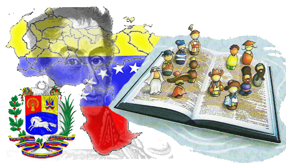

Profesora: Anny Mora
unidades de credito: 3 u/c
código de materia: 06S-1610-D1
salón: Piso 3/15
horas a la semana: 4
descripción: El programa de Educación de Defensa Integral, orienta el proceso educativo hacia la formación de un ciudadano con un desempeño idóneo para la salvaguarda de la integridad de la República y la preservación continua de los bienes y la vida social de los venezolanos a través de conocimientos científicos, tecnológicos, humanísticos y éticos, que les proporcionen competencias para el cumplimiento responsable de la defensa y seguridad de la Nación.
